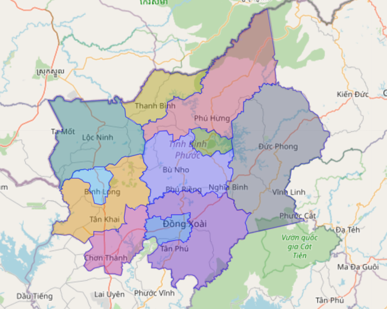

----- Nội dung -----
Bình Phước ở đâu (miền Nam)
Bình Phước nằm ở phía trên Thành Phố Hồ Chí Minh, hay còn gọi là vùng Đông Nam bộ
Cách TP. HCM khoảng 70~120km (tương đương với 2~5 giờ đi xe)
Cũng không xa lắm và cũng không gần lắm, đường xá thuận lợi.
Các Thành Phố/ Thị xã /huyện ở Bình Phước

Có Thành Phố Đồng Xoài
Thị Xã Bình Long
Còn lại là các Huyện/Thị trấn,...
Trung tâm hành chính, và các thủ tục giấy tờ pháp lý sẽ tập trung ở TP. Đồng Xoài
Đồng Xoài cũng là khu vực có các tuyến xe liên tỉnh (ví dụ đi Đà Lạt, Đắc Lắc, ...) sẽ đi ngang qua.
Đồng Xoài cũng là khu vực có các tuyến xe liên tỉnh (ví dụ đi Đà Lạt, Đắc Lắc, ...) sẽ đi ngang qua.